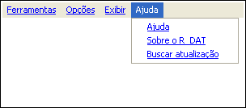

| Menu Ajuda |
|
O menu “Ajuda” provê acesso ao Manual de Operação do R_DAT (apresentado no formato html no navegador padrão de internet), às informações gerais sobre a versão atual do R_DAT e possibilita a atualização automática a partir da rede do IPEV.
Estrutura do menu “Ajuda”:

Será apresentado ao usuário o Manual de Operação do R_DAT, em formato html, no navegador padrão de Internet.
Caso alguma operação estiver em andamento, a ajuda será relativa àquela operação. Caso contrário, será aberta a página inicial dos arquivos de ajuda.

Marque a opção "Verificar ao iniciar" para que o R_DAT busque novas atualizações automaticamente ao iniciar.
Caso deseje atualizar o R_DAT para uma versão mais recente, clique em "Sim". O R_DAT será fechado e atualizará automaticamente os arquivos com a nova versão. A base de dados do usuário (calibração de aeronaves, modelo de cópia de gráfico, mapas e nomes padronizados de unidades) serão mantidos.
A atualização automatica só é possível caso o R_DAT esteja instalado no local apropriado na estrutura do MATLAB (na pasta "Toolbox"). Caso necessite instalar em outro local, siga os procedimentos de instalação manual do R_DAT.
| |
Início |
|
|